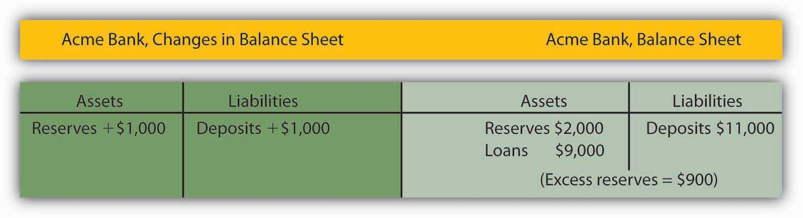
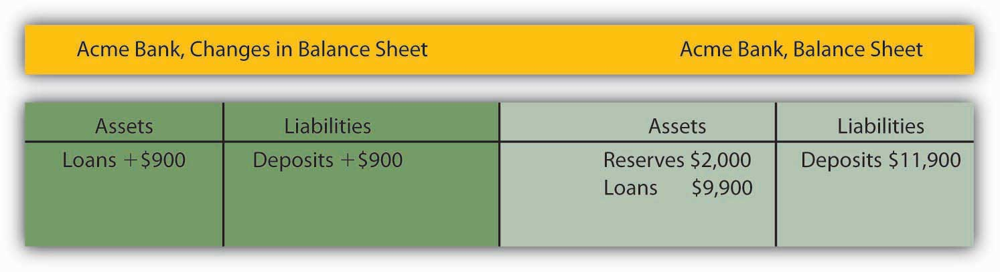
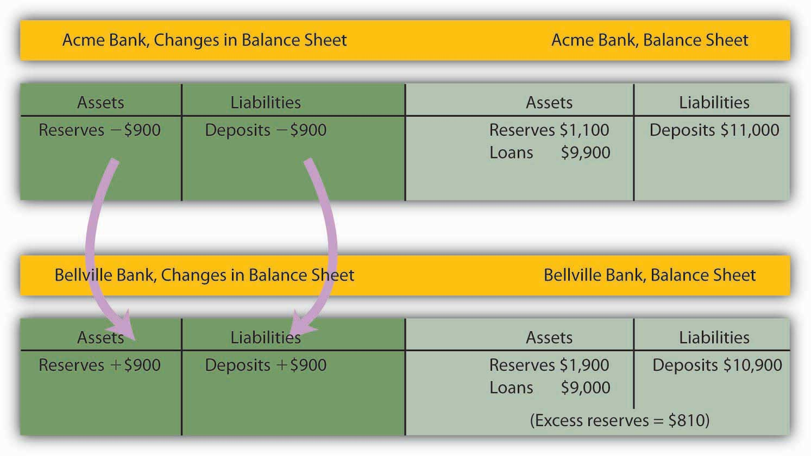
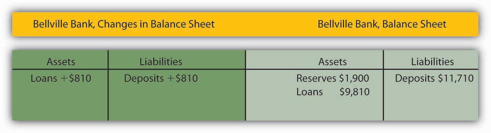
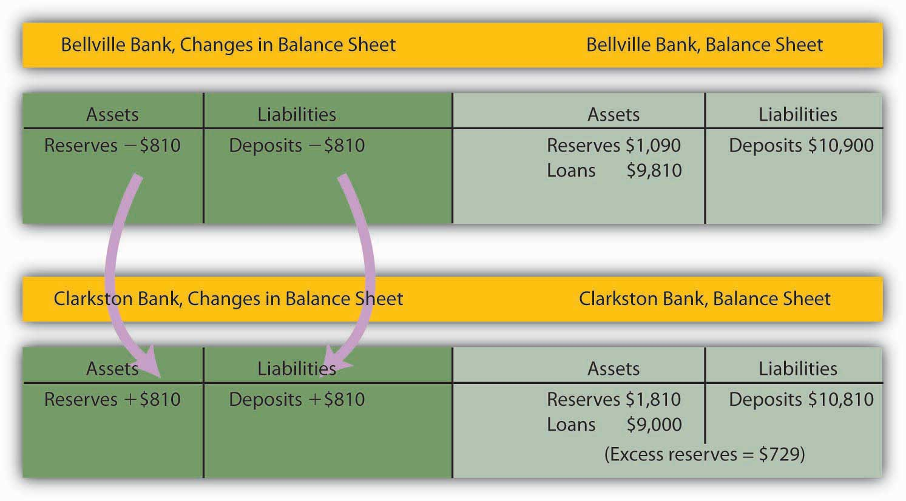
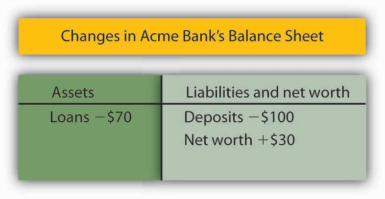

Where does money come from? How is its quantity increased or decreased? The answer to these questions suggests that money has an almost magical quality: money is created by banks when they issue loans. In effect, money is created by the stroke of a pen or the click of a computer key.
We will begin by examining the operation of banks and the banking system. We will find that, like money itself, the nature of banking is experiencing rapid change.
An institution that amasses funds from one group and makes them available to another is called a financial intermediaryAn institution that amasses funds from one group and makes them available to another.. A pension fund is an example of a financial intermediary. Workers and firms place earnings in the fund for their retirement; the fund earns income by lending money to firms or by purchasing their stock. The fund thus makes retirement saving available for other spending. Insurance companies are also financial intermediaries, because they lend some of the premiums paid by their customers to firms for investment. Mutual funds make money available to firms and other institutions by purchasing their initial offerings of stocks or bonds.
Banks play a particularly important role as financial intermediaries. Banks accept depositors’ money and lend it to borrowers. With the interest they earn on their loans, banks are able to pay interest to their depositors, cover their own operating costs, and earn a profit, all the while maintaining the ability of the original depositors to spend the funds when they desire to do so. One key characteristic of banks is that they offer their customers the opportunity to open checking accounts, thus creating checkable deposits. These functions define a bankA financial intermediary that accepts deposits, makes loans, and offers checking accounts., which is a financial intermediary that accepts deposits, makes loans, and offers checking accounts.
Over time, some nonbank financial intermediaries have become more and more like banks. For example, brokerage firms usually offer customers interest-earning accounts and make loans. They now allow their customers to write checks on their accounts.
The fact that banks account for a declining share of U.S. financial assets alarms some observers. We will see that banks are more tightly regulated than are other financial institutions; one reason for that regulation is to maintain control over the money supply. Other financial intermediaries do not face the same regulatory restrictions as banks. Indeed, their relative freedom from regulation is one reason they have grown so rapidly. As other financial intermediaries become more important, central authorities begin to lose control over the money supply.
The declining share of financial assets controlled by “banks” began to change in 2008. Many of the nation’s largest investment banks—financial institutions that provided services to firms but were not regulated as commercial banks—began having serious financial difficulties as a result of their investments tied to home mortgage loans. As home prices in the United States began falling, many of those mortgage loans went into default. Investment banks that had made substantial purchases of securities whose value was ultimately based on those mortgage loans themselves began failing. Bear Stearns, one of the largest investment banks in the United States, required federal funds to remain solvent. Another large investment bank, Lehman Brothers, failed. In an effort to avoid a similar fate, several other investment banks applied for status as ordinary commercial banks subject to the stringent regulation those institutions face. One result of the terrible financial crisis that crippled the U.S. and other economies in 2008 may be greater control of the money supply by the Fed.
Bank finance lies at the heart of the process through which money is created. To understand money creation, we need to understand some of the basics of bank finance.
Banks accept deposits and issue checks to the owners of those deposits. Banks use the money collected from depositors to make loans. The bank’s financial picture at a given time can be depicted using a simplified balance sheetA financial statement showing assets, liabilities, and net worth., which is a financial statement showing assets, liabilities, and net worth. AssetsAnything of value. are anything of value. LiabilitiesObligations to other parties. are obligations to other parties. Net worthAssets less liabilities. equals assets less liabilities. All these are given dollar values in a firm’s balance sheet. The sum of liabilities plus net worth therefore must equal the sum of all assets. On a balance sheet, assets are listed on the left, liabilities and net worth on the right.
The main way that banks earn profits is through issuing loans. Because their depositors do not typically all ask for the entire amount of their deposits back at the same time, banks lend out most of the deposits they have collected—to companies seeking to expand their operations, to people buying cars or homes, and so on. Banks keep only a fraction of their deposits as cash in their vaults and in deposits with the Fed. These assets are called reservesBank assets held as cash in vaults and in deposits with the Federal Reserve.. Banks lend out the rest of their deposits. A system in which banks hold reserves whose value is less than the sum of claims outstanding on those reserves is called a fractional reserve banking systemSystem in which banks hold reserves whose value is less than the sum of claims outstanding on those reserves..
Table 24.1 "The Consolidated Balance Sheet for U.S. Commercial Banks, January 2012" shows a consolidated balance sheet for commercial banks in the United States for January 2012. Banks hold reserves against the liabilities represented by their checkable deposits. Notice that these reserves were a small fraction of total deposit liabilities of that month. Most bank assets are in the form of loans.
Table 24.1 The Consolidated Balance Sheet for U.S. Commercial Banks, January 2012
| Assets | Liabilities and Net Worth | ||
|---|---|---|---|
| Reserves | $1,592.9 | Checkable deposits | $8,517.9 |
| Other assets | $1,316.2 | Borrowings | 1,588.1 |
| Loans | $7,042.0 | Other liabilities | 1,049.4 |
| Securities | $2,546.1 | ||
| Total assets | $12,497.2 | Total liabilities | $11,155.4 |
| Net worth | $1,341.8 | ||
This balance sheet for all commercial banks in the United States shows their financial situation in billions of dollars, seasonally adjusted, in January 2012.
Source: Federal Reserve Statistical Release H.8 (February 17, 2012).
In the next section, we will learn that money is created when banks issue loans.
To understand the process of money creation today, let us create a hypothetical system of banks. We will focus on three banks in this system: Acme Bank, Bellville Bank, and Clarkston Bank. Assume that all banks are required to hold reserves equal to 10% of their checkable deposits. The quantity of reserves banks are required to hold is called required reservesThe quantity of reserves banks are required to hold.. The reserve requirement is expressed as a required reserve ratioThe ratio of reserves to checkable deposits a bank must maintain.; it specifies the ratio of reserves to checkable deposits a bank must maintain. Banks may hold reserves in excess of the required level; such reserves are called excess reservesReserves in excess of the required level.. Excess reserves plus required reserves equal total reserves.
Because banks earn relatively little interest on their reserves held on deposit with the Federal Reserve, we shall assume that they seek to hold no excess reserves. When a bank’s excess reserves equal zero, it is loaned upWhen a bank’s excess reserves equal zero.. Finally, we shall ignore assets other than reserves and loans and deposits other than checkable deposits. To simplify the analysis further, we shall suppose that banks have no net worth; their assets are equal to their liabilities.
Let us suppose that every bank in our imaginary system begins with $1,000 in reserves, $9,000 in loans outstanding, and $10,000 in checkable deposit balances held by customers. The balance sheet for one of these banks, Acme Bank, is shown in Table 24.2 "A Balance Sheet for Acme Bank". The required reserve ratio is 0.1: Each bank must have reserves equal to 10% of its checkable deposits. Because reserves equal required reserves, excess reserves equal zero. Each bank is loaned up.
Table 24.2 A Balance Sheet for Acme Bank
| Acme Bank | |||
|---|---|---|---|
| Assets | Liabilities | ||
| Reserves | $1,000 | Deposits | $10,000 |
| Loans | $9,000 | ||
We assume that all banks in a hypothetical system of banks have $1,000 in reserves, $10,000 in checkable deposits, and $9,000 in loans. With a 10% reserve requirement, each bank is loaned up; it has zero excess reserves.
Acme Bank, like every other bank in our hypothetical system, initially holds reserves equal to the level of required reserves. Now suppose one of Acme Bank’s customers deposits $1,000 in cash in a checking account. The money goes into the bank’s vault and thus adds to reserves. The customer now has an additional $1,000 in his or her account. Two versions of Acme’s balance sheet are given here. The first shows the changes brought by the customer’s deposit: reserves and checkable deposits rise by $1,000. The second shows how these changes affect Acme’s balances. Reserves now equal $2,000 and checkable deposits equal $11,000. With checkable deposits of $11,000 and a 10% reserve requirement, Acme is required to hold reserves of $1,100. With reserves equaling $2,000, Acme has $900 in excess reserves.
At this stage, there has been no change in the money supply. When the customer brought in the $1,000 and Acme put the money in the vault, currency in circulation fell by $1,000. At the same time, the $1,000 was added to the customer’s checking account balance, so the money supply did not change.
Figure 24.2
Because Acme earns only a low interest rate on its excess reserves, we assume it will try to loan them out. Suppose Acme lends the $900 to one of its customers. It will make the loan by crediting the customer’s checking account with $900. Acme’s outstanding loans and checkable deposits rise by $900. The $900 in checkable deposits is new money; Acme created it when it issued the $900 loan. Now you know where money comes from—it is created when a bank issues a loan.
Figure 24.3
Presumably, the customer who borrowed the $900 did so in order to spend it. That customer will write a check to someone else, who is likely to bank at some other bank. Suppose that Acme’s borrower writes a check to a firm with an account at Bellville Bank. In this set of transactions, Acme’s checkable deposits fall by $900. The firm that receives the check deposits it in its account at Bellville Bank, increasing that bank’s checkable deposits by $900. Bellville Bank now has a check written on an Acme account. Bellville will submit the check to the Fed, which will reduce Acme’s deposits with the Fed—its reserves—by $900 and increase Bellville’s reserves by $900.
Figure 24.4
Notice that Acme Bank emerges from this round of transactions with $11,000 in checkable deposits and $1,100 in reserves. It has eliminated its excess reserves by issuing the loan for $900; Acme is now loaned up. Notice also that from Acme’s point of view, it has not created any money! It merely took in a $1,000 deposit and emerged from the process with $1,000 in additional checkable deposits.
The $900 in new money Acme created when it issued a loan has not vanished—it is now in an account in Bellville Bank. Like the magician who shows the audience that the hat from which the rabbit appeared was empty, Acme can report that it has not created any money. There is a wonderful irony in the magic of money creation: banks create money when they issue loans, but no one bank ever seems to keep the money it creates. That is because money is created within the banking system, not by a single bank.
The process of money creation will not end there. Let us go back to Bellville Bank. Its deposits and reserves rose by $900 when the Acme check was deposited in a Bellville account. The $900 deposit required an increase in required reserves of $90. Because Bellville’s reserves rose by $900, it now has $810 in excess reserves. Just as Acme lent the amount of its excess reserves, we can expect Bellville to lend this $810. The next set of balance sheets shows this transaction. Bellville’s loans and checkable deposits rise by $810.
Figure 24.5
The $810 that Bellville lent will be spent. Let us suppose it ends up with a customer who banks at Clarkston Bank. Bellville’s checkable deposits fall by $810; Clarkston’s rise by the same amount. Clarkston submits the check to the Fed, which transfers the money from Bellville’s reserve account to Clarkston’s. Notice that Clarkston’s deposits rise by $810; Clarkston must increase its reserves by $81. But its reserves have risen by $810, so it has excess reserves of $729.
Figure 24.6
Notice that Bellville is now loaned up. And notice that it can report that it has not created any money either! It took in a $900 deposit, and its checkable deposits have risen by that same $900. The $810 it created when it issued a loan is now at Clarkston Bank.
The process will not end there. Clarkston will lend the $729 it now has in excess reserves, and the money that has been created will end up at some other bank, which will then have excess reserves—and create still more money. And that process will just keep going as long as there are excess reserves to pass through the banking system in the form of loans. How much will ultimately be created by the system as a whole? With a 10% reserve requirement, each dollar in reserves backs up $10 in checkable deposits. The $1,000 in cash that Acme’s customer brought in adds $1,000 in reserves to the banking system. It can therefore back up an additional $10,000! In just the three banks we have shown, checkable deposits have risen by $2,710 ($1,000 at Acme, $900 at Bellville, and $810 at Clarkston). Additional banks in the system will continue to create money, up to a maximum of $7,290 among them. Subtracting the original $1,000 that had been a part of currency in circulation, we see that the money supply could rise by as much as $9,000.
Notice that when the banks received new deposits, they could make new loans only up to the amount of their excess reserves, not up to the amount of their deposits and total reserve increases. For example, with the new deposit of $1,000, Acme Bank was able to make additional loans of $900. If instead it made new loans equal to its increase in total reserves, then after the customers who received new loans wrote checks to others, its reserves would be less than the required amount. In the case of Acme, had it lent out an additional $1,000, after checks were written against the new loans, it would have been left with only $1,000 in reserves against $11,000 in deposits, for a reserve ratio of only 0.09, which is less than the required reserve ratio of 0.1 in the example.
We can relate the potential increase in the money supply to the change in reserves that created it using the deposit multiplierThe ratio of the maximum possible change in checkable deposits (∆D) to the change in reserves (∆R). (md), which equals the ratio of the maximum possible change in checkable deposits (∆D) to the change in reserves (∆R). In our example, the deposit multiplier was 10:
Equation 24.1
To see how the deposit multiplier md is related to the required reserve ratio, we use the fact that if banks in the economy are loaned up, then reserves, R, equal the required reserve ratio (rrr) times checkable deposits, D:
Equation 24.2
A change in reserves produces a change in loans and a change in checkable deposits. Once banks are fully loaned up, the change in reserves, ∆R, will equal the required reserve ratio times the change in deposits, ∆D:
Equation 24.3
Solving for ∆D, we have
Equation 24.4
Dividing both sides by ∆R, we see that the deposit multiplier, md, is 1/rrr:
Equation 24.5
The deposit multiplier is thus given by the reciprocal of the required reserve ratio. With a required reserve ratio of 0.1, the deposit multiplier is 10. A required reserve ratio of 0.2 would produce a deposit multiplier of 5. The higher the required reserve ratio, the lower the deposit multiplier.
Actual increases in checkable deposits will not be nearly as great as suggested by the deposit multiplier. That is because the artificial conditions of our example are not met in the real world. Some banks hold excess reserves, customers withdraw cash, and some loan proceeds are not spent. Each of these factors reduces the degree to which checkable deposits are affected by an increase in reserves. The basic mechanism, however, is the one described in our example, and it remains the case that checkable deposits increase by a multiple of an increase in reserves.
The entire process of money creation can work in reverse. When you withdraw cash from your bank, you reduce the bank’s reserves. Just as a deposit at Acme Bank increases the money supply by a multiple of the original deposit, your withdrawal reduces the money supply by a multiple of the amount you withdraw. And just as money is created when banks issue loans, it is destroyed as the loans are repaid. A loan payment reduces checkable deposits; it thus reduces the money supply.
Suppose, for example, that the Acme Bank customer who borrowed the $900 makes a $100 payment on the loan. Only part of the payment will reduce the loan balance; part will be interest. Suppose $30 of the payment is for interest, while the remaining $70 reduces the loan balance. The effect of the payment on Acme’s balance sheet is shown below. Checkable deposits fall by $100, loans fall by $70, and net worth rises by the amount of the interest payment, $30.
Similar to the process of money creation, the money reduction process decreases checkable deposits by, at most, the amount of the reduction in deposits times the deposit multiplier.
Figure 24.7
Banks are among the most heavily regulated of financial institutions. They are regulated in part to protect individual depositors against corrupt business practices. Banks are also susceptible to crises of confidence. Because their reserves equal only a fraction of their deposit liabilities, an effort by customers to get all their cash out of a bank could force it to fail. A few poorly managed banks could create such a crisis, leading people to try to withdraw their funds from well-managed banks. Another reason for the high degree of regulation is that variations in the quantity of money have important effects on the economy as a whole, and banks are the institutions through which money is created.
From a customer’s point of view, the most important form of regulation comes in the form of deposit insurance. For commercial banks, this insurance is provided by the Federal Deposit Insurance Corporation (FDIC). Insurance funds are maintained through a premium assessed on banks for every $100 of bank deposits.
If a commercial bank fails, the FDIC guarantees to reimburse depositors up to $250,000 (raised from $100,000 during the financial crisis of 2008) per insured bank, for each account ownership category. From a depositor's point of view, therefore, it is not necessary to worry about a bank's safety.
One difficulty this insurance creates, however, is that it may induce the officers of a bank to take more risks. With a federal agency on hand to bail them out if they fail, the costs of failure are reduced. Bank officers can thus be expected to take more risks than they would otherwise, which, in turn, makes failure more likely. In addition, depositors, knowing that their deposits are insured, may not scrutinize the banks’ lending activities as carefully as they would if they felt that unwise loans could result in the loss of their deposits.
Thus, banks present us with a fundamental dilemma. A fractional reserve system means that banks can operate only if their customers maintain their confidence in them. If bank customers lose confidence, they are likely to try to withdraw their funds. But with a fractional reserve system, a bank actually holds funds in reserve equal to only a small fraction of its deposit liabilities. If its customers think a bank will fail and try to withdraw their cash, the bank is likely to fail. Bank panics, in which frightened customers rush to withdraw their deposits, contributed to the failure of one-third of the nation’s banks between 1929 and 1933. Deposit insurance was introduced in large part to give people confidence in their banks and to prevent failure. But the deposit insurance that seeks to prevent bank failures may lead to less careful management—and thus encourage bank failure.
To reduce the number of bank failures, banks are limited in what they can do. Banks are required to maintain a minimum level of net worth as a fraction of total assets. Regulators from the FDIC regularly perform audits and other checks of individual banks to ensure they are operating safely.
The FDIC has the power to close a bank whose net worth has fallen below the required level. In practice, it typically acts to close a bank when it becomes insolvent, that is, when its net worth becomes negative. Negative net worth implies that the bank’s liabilities exceed its assets.
When the FDIC closes a bank, it arranges for depositors to receive their funds. When the bank’s funds are insufficient to return customers’ deposits, the FDIC uses money from the insurance fund for this purpose. Alternatively, the FDIC may arrange for another bank to purchase the failed bank. The FDIC, however, continues to guarantee that depositors will not lose any money.
In the aftermath of the Great Depression and the banking crisis that accompanied it, laws were passed to try to make the banking system safer. The Glass-Steagall Act of that period created the FDIC and the separation between commercial banks and investment banks. Over time, the financial system in the United States and in other countries began to change, and in 1999, a law was passed in the United States that essentially repealed the part of the Glass-Steagall Act that had created the separation between commercial and investment banking. Proponents of eliminating the separation between the two types of banks argued that banks could better diversify their portfolios if allowed to participate in other parts of the financial markets and that banks in other countries operated without such a separation.
Similar to the reaction to the banking crisis of the 1930s, the financial crisis of 2008 and the Great Recession led to calls for financial market reform. The result was the Dodd-Frank Wall Street Reform and Consumer Protection Act, usually referred to as the Dodd-Frank Act, which was passed in July 2010. More than 2,000 pages in length, the regulations to implement most provisions of this act were set to take place over a nearly two-year period, with some provisions expected to take even longer to implement. This act created the Consumer Financial Protection Agency to oversee and regulate various aspects of consumer credit markets, such as credit card and bank fees and mortgage contracts. It also created the Financial Stability Oversight Council (FSOC) to assess risks for the entire financial industry. The FSOC can recommend that a nonbank financial firm, such as a hedge fund that is perhaps threatening the stability of the financial system (i.e., getting “too big to fail”), become regulated by the Federal Reserve. If such firms do become insolvent, a process of liquidation similar to what occurs when the FDIC takes over a bank can be applied. The Dodd-Frank Act also calls for implementation of the Volcker rule, which was named after the former chair of the Fed who argued the case. The Volcker rule is meant to ban banks from using depositors’ funds to engage in certain types of speculative investments to try to enhance the profits of the bank, at least partly reinstating the separation between commercial and investment banking that the Glass-Steagall Act had created. There are many other provisions in this wide-sweeping legislation that are designed to improve oversight of nonbank financial institutions, increase transparency in the operation of various forms of financial instruments, regulate credit rating agencies such as Moody’s and Standard & Poor’s, and so on. Given the lag time associated with fully implementing the legislation, it will probably be many years before its impact can be fully assessed.

It was the darling of Wall Street—it showed rapid growth and made big profits. Washington Mutual, a savings and loan based in the state of Washington, was a relatively small institution whose CEO, Kerry K. Killinger, had big plans. He wanted to transform his little Seattle S&L into the Wal-Mart of banks.
Mr. Killinger began pursuing a relatively straightforward strategy. He acquired banks in large cities such as Chicago and Los Angeles. He acquired banks up and down the east and west coasts. He aggressively extended credit to low-income individuals and families—credit cards, car loans, and mortgages. In making mortgage loans to low-income families, WaMu, as the bank was known, quickly became very profitable. But it was exposing itself to greater and greater risk, according to the New York Times.
Housing prices in the United States more than doubled between 1997 and 2007. During that time, loans to even low-income households were profitable. But, as housing prices began falling in 2007, banks such as WaMu began to experience losses as homeowners began to walk away from houses whose values suddenly fell below their outstanding mortgages. WaMu began losing money in 2007 as housing prices began falling. The company had earned $3.6 billion in 2006, and swung to a loss of $67 million in 2007, according to the Puget Sound Business Journal. Mr. Killinger was ousted by the board early in September of 2008. The bank failed later that month. It was the biggest bank failure in the history of the United States.
The Federal Deposit Insurance Corporation (FDIC) had just rescued another bank, IndyMac, which was only a tenth the size of WaMu, and would have done the same for WaMu if it had not been able to find a company to purchase it. But in this case, JPMorgan Chase agreed to take it over—its deposits, bank branches, and its troubled asset portfolio. The government and the Fed even negotiated the deal behind WaMu’s back! The then chief executive officer of the company, Alan H. Fishman, was reportedly flying from New York to Seattle when the deal was finalized.
The government was anxious to broker a deal that did not require use of the FDIC’s depleted funds following IndyMac’s collapse. But it would have done so if a buyer had not been found. As the FDIC reports on its Web site: “Since the FDIC’s creation in 1933, no depositor has ever lost even one penny of FDIC-insured funds.”
Sources: Eric Dash and Andrew Ross Sorkin, “Government Seizes WaMu and Sells Some Assets,” New York Times, September 25, 2008, p. A1; Kirsten Grind, “Insiders Detail Reasons for WaMu’s Failure,” Puget Sound Business Journal, January 23, 2009; and FDIC Web site at https://www.fdic.gov/edie/fdic_info.html.
Acme Bank is loaned up, since $2,000/$10,000 = 0.2, which is the required reserve ratio. Acme’s balance sheet is:
Acme Bank’s balance sheet after losing $1,000 in deposits:
Required reserves are deficient by $800. Acme must hold 20% of its deposits, in this case , as reserves, but it has only $1,000 in reserves at the moment.
The contraction in checkable deposits would be
∆D = (1/0.2) × (−$1,000) = −$5,000